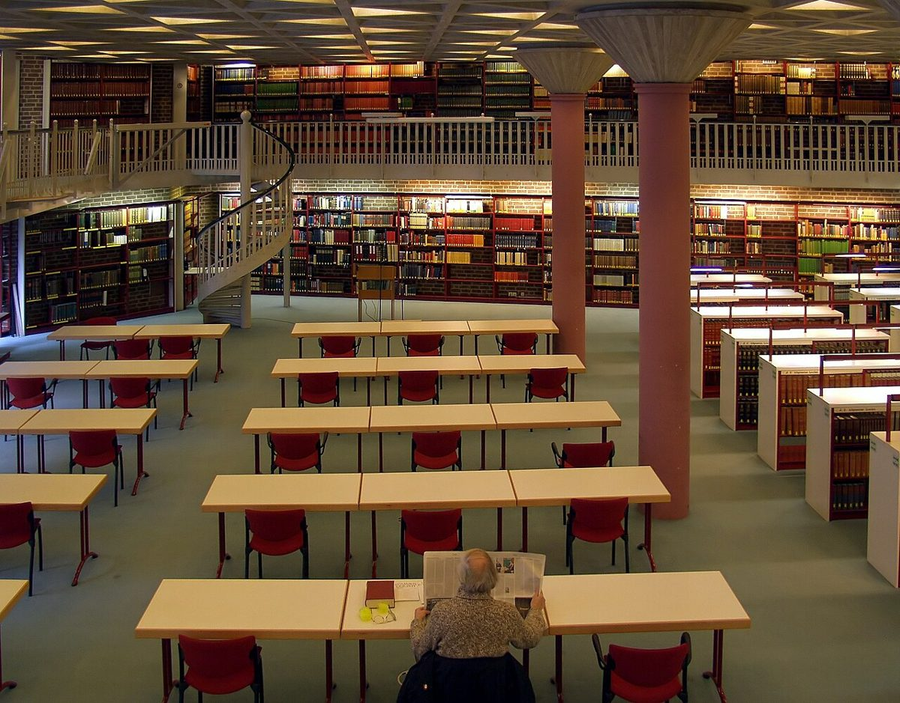

科隆大教堂攻略：德国哥特式建筑的巅峰之作

科隆大教堂是德国最受欢迎的旅游景点之一，这座哥特式建筑的杰作每年吸引着数百万游客。无论您是建筑爱好者、历史迷还是普通游客，这座壮观的教堂都值得一游。以下是我们为您准备的实用指南。
如何前往科隆大教堂
科隆大教堂位于城市中心，交通十分便利。从科隆中央火车站(Hauptbahnhof)步行仅需2分钟即可到达。如果您开车前往，可以停在附近的停车场，但建议使用公共交通工具，因为市中心停车位紧张且价格较高。从科隆机场到市中心可以乘坐S-Bahn，约15分钟车程。此外，科隆的公交和地铁系统非常发达，几乎可以从城市任何地方轻松抵达教堂。
最佳游览时间
想要避开人群最好选择工作日早晨游览。春季和秋季天气宜人，是最佳旅游季节。夏季虽然游客较多，但可以体验科隆的露天咖啡馆氛围。圣诞节期间，科隆大教堂周围的圣诞市场非常值得一看，但要做好应对拥挤人群的准备。
不可错过的5个亮点
1. 教堂外观全景：先从外部欣赏这座建筑的整体美，特别是北侧和西侧立面。
2. 彩色玻璃窗：特别是
Haiktec
Text mit KI erstellt und automatisch geprueft.